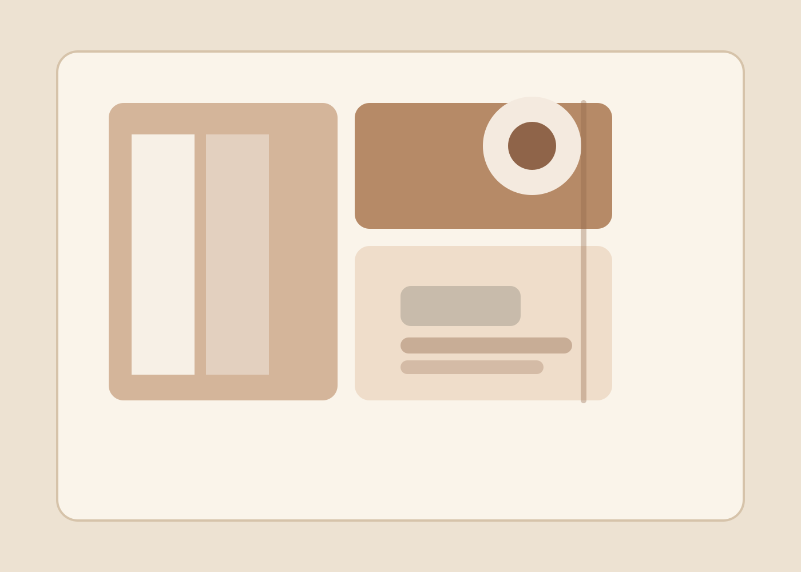

Interior editorial
The Mercer Penthouse
A luminous apartment story with glass reflections, tailored styling, and tactile shadow detail.
Rowan Vale Studio
We shape image-making around natural movement, warm light, and calm direction so every frame feels composed, intimate, and ready for publication.

Featured work
Each project below was shaped to feel specific to the client while still carrying the studio’s editorial point of view.

Interior editorial
A luminous apartment story with glass reflections, tailored styling, and tactile shadow detail.
Campaign portraiture
Coastal brand imagery created for a lifestyle label launching its spring collection.

Wedding story
An intimate winter ceremony photographed with a quiet, cinematic rhythm.
Services
Packages are designed to be clear, collaborative, and useful whether you are building a brand or planning a once-in-a-lifetime event.
From $1,200
Strategy-led portraits, product details, and campaign frames for founders, artisans, and service brands.
From $3,400
A calm, attentive approach to wedding coverage with an emphasis on honest moments and refined detail.
Custom quote
Location scouting, art direction, and image delivery sized for launch campaigns, lookbooks, and press use.
From $850
Portrait sessions that feel relaxed and natural, with room for movement, laughter, and meaningful keepsakes.
Process
We align on mood, timeline, wardrobe, and usage so the session feels intentional from the beginning.
Direction stays light and precise. We build from real movement, real light, and real chemistry.
Retouched images are delivered in a clean online gallery with print guidance and usage notes.
Style pillars
We design sessions around golden hour, window light, and layered shadow so the final set feels dimensional.
Our posing language is quiet and precise, which keeps the experience relaxed without losing polish.
We look for the hand-on-shoulder moments, texture in the clothing, and the unscripted pause between poses.
Testimonials
Rowan Vale made our launch look richer than we thought possible. The direction was effortless and the files gave our brand a real point of view.
The whole wedding felt calm because the process was calm. Every image has depth, warmth, and the kind of honesty that does not age out.
Our family session finally looked like us instead of a staged set. The portraits are relaxed, elegant, and full of small true moments.
Journal
When no posts are published yet, the section still reads like a finished editorial preview rather than an empty state.
April 2026 · Studio notes
Read the studio journal for guidance on styling, planning, and session preparation.
March 2026 · Brand planning
Read the studio journal for guidance on styling, planning, and session preparation.
February 2026 · Field journal
Read the studio journal for guidance on styling, planning, and session preparation.